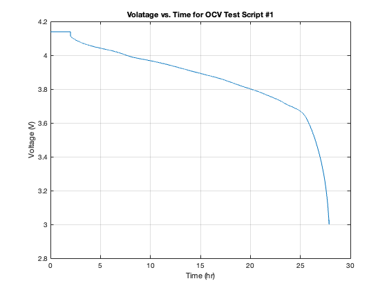
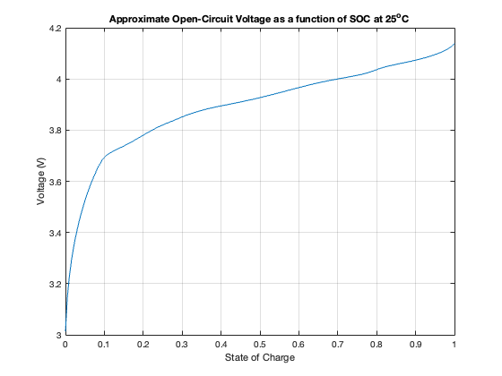

clc, clearvars, close all
load E2_OCV_P25.mat;
whos
figure(1)
plot(OCVData.script1.time/3600, OCVData.script1.voltage);
title('Volatage vs. Time for OCV Test Script #1')
xlabel('Time (hr)')
ylabel('Voltage (V)')
grid on
totDisAh = OCVData.script1.disAh(end) + OCVData.script2.disAh(end) + ...
OCVData.script3.disAh(end) + OCVData.script4.disAh(end);
totChgAh = OCVData.script1.chgAh(end) + OCVData.script2.chgAh(end) + ...
OCVData.script3.chgAh(end) + OCVData.script4.chgAh(end);
eta25 = totDisAh/totChgAh
Q25 = OCVData.script1.disAh(end) + OCVData.script2.disAh(end) - ...
eta25*OCVData.script1.chgAh(end) - eta25*OCVData.script2.chgAh(end)
SOC = 0:0.005:1;
indD = find(OCVData.script1.step == 2);
IR1Da = OCVData.script1.voltage(indD(1) - 1) - OCVData.script1.voltage(indD(1));
IR2Da = OCVData.script1.voltage(indD(end) + 1) - OCVData.script1.voltage(indD(end));
indC = find(OCVData.script3.step == 2);
IR1Ca = OCVData.script3.voltage(indC(1)) - OCVData.script3.voltage(indC(1) - 1);
IR2Ca = OCVData.script3.voltage(indC(end)) - OCVData.script3.voltage(indC(end) + 1);
IR1D = min(IR1Da, 2*IR2Ca);
IR2D = min(IR2Da, 2*IR1Ca);
IR1C = min(IR1Ca, 2*IR2Da);
IR2C = min(IR2Ca, 2*IR1Da);
blend = (0:length(indD)-1)/(length(indD)-1);
IRblend = IR1D + (IR2D - IR1D)*blend(:);
disV = OCVData.script1.voltage(indD) + IRblend;
disZ = 1 - OCVData.script1.disAh(indD)/Q25;
disZ = disZ + (1 - disZ(1));
blend = (0:length(indC)-1)/(length(indC)-1);
IRblend = IR1C + (IR2C - IR1C)*blend(:);
chgV = OCVData.script3.voltage(indC) - IRblend;
chgZ = OCVData.script3.chgAh(indC)/Q25;
chgZ = chgZ - chgZ(1);
deltaV50 = interp1(chgZ, chgV, 0.5) - interp1(disZ, disV, 0.5);
ind = find(chgZ < 0.5);
vChg = chgV(ind) - chgZ(ind)*deltaV50;
zChg = chgZ(ind);
ind = find(disZ > 0.5);
vDis = flipud(disV(ind) + (1 - disZ(ind))*deltaV50);
zDis = flipud(disZ(ind));
rawOCV = interp1([zChg; zDis], [vChg; vDis], SOC, "linear", "extrap");
figure(2)
plot(SOC, rawOCV)
xlabel('State of Charge')
ylabel('Voltage (V)')
grid on
title('Approximate Open-Circuit Voltage as a function of SOC at 25^oC')
testSOC = 0.25
OCV = interp1(SOC, rawOCV, testSOC)
Name Size Bytes Class Attributes
OCVData 1x1 2039424 struct
eta25 =
0.9834
Q25 =
5.2127
testSOC =
0.2500
OCV =
3.8201
 